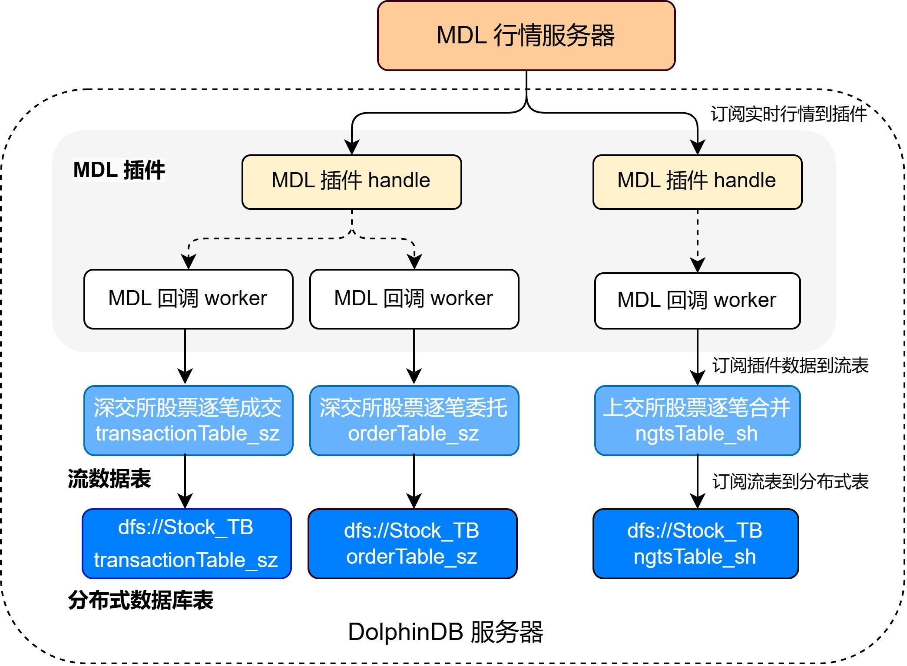
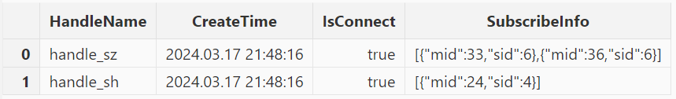

MDL 行情插件最佳实践指南
通联数据依托于金融大数据，结合人工智能技术为投资者提供个性化、智能化、专业化投资服务。而 MDL 是通联数据提供的高频行情数据服务，DolphinDB 提供了能够从 MDL 服务器获取高频行情数据的 DolphinDB MDL 插件，帮助用户方便地通过 DolphinDB 脚本语言将实时行情数据接入 DolphinDB 中，以便进行后续的计算或存储。
本文主要介绍如何通过 MDL 插件将实时行情数据写入分布式数据库。本文全部代码需要运行在 2.00.11 或者更高版本的 DolphinDB Server 以及插件上，目前仅支持 Linux 系统。
1. MDL 行情插件介绍
MDL 插件基于 MDL 官方提供的行情数据服务 C++ SDK（即 TCP 版本 MDL）实现。MDL 插件最核心的功能是实现了行情回调函数，每次接收到行情时会写入订阅时所指定的 DolphinDB 共享流表中。DolphinDB MDL 插件目前已经支持了包括上交所、深交所、中金所 、郑商所、上期能源、大商所、广期所数据源的 50 余种数据类型，订阅使用所需指定的参数详情见下文。具体MDL 插件的接口介绍见 DolphinDB MDL Plugin 使用说明。
2. 基本使用介绍
2.1 安装插件
MDL 插件目前可以在 2.00.11 版本及以后的 DolphinDB Server 通过插件市场进行安装。节点启动后，连接节点并在 GUI（或 VS Code、Web UI）等 DolphinDB 客户端中执行 installPlugin 函数，则可以下载到与当前 server 版本适配的 MDL 插件文件，插件文件包括插件描述文件及插件的二进制文件。
login("admin", "123456")
installPlugin("mdl")installPlugin 函数若正常返回，则代表下载成功，其返回值为插件描述文件（PluginMDL.txt）的安装路径，如：
/path_to_dolphindb_server/server/plugins/MDL/PluginMDL.txtinstallPlugin 函数实际上是完成从远程文件服务器拉取插件文件到 DolphinDB Server 所在的服务器，压缩后的 MDL 包大小约为 60 MB，下载需要一定的耗时。
2.2 加载插件
在脚本中调用插件相关的接口前，需要先加载插件。在 GUI（或 VS Code、Web UI）等客户端中执行 loadPlugin("mdl")。以下示例中使用了相对路径，也可以使用 2.1 中返回的绝对路径 /path_to_dolphindb_server/server/plugins/MDL/PluginMDL.txt。
loadPlugin("./plugins/MDL/PluginMDL.txt")loadPlugin 函数正常返回则插件加载成功，以 VS Code 为例，首次加载成功后返回的部分信息如下，返回值内容是 MDL 插件所提供的函数：

3. 行情的接入与存储
本章以订阅沪深两市的全市场股票的逐笔数据、实时写入 DolphinDB 分布式数据库为例，对 MDL 插件的使用进行说明。
3.1 数据接入方案
数据接入的流程如下：
- 通过 MDL 插件订阅深圳市场的股票逐笔委托、逐笔成交，以及上海市场的逐笔合并数据逐笔数据写入 DolphinDB 的三个持久化流数据表。持久化流数据表是具备发布订阅功能的内存表。
- 订阅持久化流数据表写入 DolphinDB 分布式数据库，将数据存储到磁盘上。
注意：请勿使用 MDL 插件将行情数据直接写入分布式数据库。因为分布式数据库并不适用于此类高频的流式写入。建议在使用时，借助流数据表及其发布订阅功能以实现部分的批处理。这样既可以提高写入的吞吐量，也有助于降低时延。
MDL 行情接收流程图
下面分步骤介绍关键的 DolphinDB 代码实现，完整脚本见附录。
3.2 数据接入方案实施步骤
3.2.1 流表和分布式表规划
注意：为保证后续的 enableTableShareAndPersistence 函数能够正常执行，需要节点启动之前在配置文件中（单节点：dolphindb.cfg，集群：cluster.cfg）指定配置参数 persistenceDir，配置参考功能配置。
获取表结构
调用 MDL::getSchema 方法可以获取行情数据各个表的表结构。运行以下代码可以获取上海股票逐笔合并、深圳股票逐笔成交和逐笔委托三张表的表结构：
// 深交所股票逐笔成交
transactionSchema = MDL::getSchema(`MDLSID_MDL_SZL2, 36);
// 深交所股票逐笔委托
orderSchema = MDL::getSchema(`MDLSID_MDL_SZL2, 33);
// 上交所股票逐笔合并
ngtsSchema = MDL::getSchema(`MDLSID_MDL_SHL2, 24);创建持久化流数据表
得到行情数据的表结构后，使用该表结构创建持久化流数据表。
cacheSize = 1000000
enableTableShareAndPersistence(table=streamTable(cacheSize:0, transactionSchema[`name], transactionSchema[`type]), tableName=`transactionTable_sz, cacheSize=cacheSize)
enableTableShareAndPersistence(table=streamTable(cacheSize:0, orderSchema[`name], orderSchema[`type]), tableName=`orderTable_sz, cacheSize=cacheSize)
enableTableShareAndPersistence(table=streamTable(cacheSize:0, ngtsSchema[`name], ngtsSchema[`type]), tableName=`ngtsTable_sh, cacheSize=cacheSize)代码第二行的 cacheSize 变量控制了在建表时预分配内存的大小、以及流数据表可占用的最大内存，其单位是行，设置较大的 cacheSize 可以降低出现峰值时延的频率。具体大小可以根据实际的可使用的内存大小决定。具体优化原理可参考 DolphinDB 流计算时延统计与性能优化。
创建分布式数据库
为将行情数据存入分布式数据库，需要根据之前得到的行情数据表结构来创建分布式库表，分区规则参考自《基于 DolphinDB 存储金融数据的分区方案最佳实践》。
注意：由于 MDL 没有当天的日期字段，因此需要手动增加日期字段以便于分区。
transactionColName = transactionSchema[`name]
transactionColName.append!("Date")
transactionColType = transactionSchema[`type]
transactionColType.append!(DATE)
orderColName = orderSchema[`name]
orderColName.append!("Date")
orderColType = orderSchema[`type]
orderColType.append!(DATE)
ngtsColName = ngtsSchema[`name]
ngtsColName.append!("Date")
ngtsColType = ngtsSchema[`type]
ngtsColType.append!(DATE)
dbName = "dfs://Stock_TB"
transactionTbName = "transactionTable_sz"
orderTbName = "orderTable_sz"
ngtsTbName = "ngtsTable_sh"
dbDate = database(, partitionType=VALUE, partitionScheme=2024.01.01..2025.01.01)
dbID = database(, partitionType=HASH, partitionScheme=[SYMBOL, 25])
db = database(directory=dbName, partitionType=COMPO, partitionScheme=[dbDate, dbID],engine='TSDB',atomic='CHUNK')
tbSchema = table(1:0, transactionColName, transactionColType)
db.createPartitionedTable(table=tbSchema,tableName=transactionTbName,partitionColumns=`Date`SecurityID,sortColumns=`SecurityID`TransactTime)
tbSchema = table(1:0, orderColName, orderColType)
db.createPartitionedTable(table=tbSchema,tableName=orderTbName,partitionColumns=`Date`SecurityID,sortColumns=`SecurityID`TransactTime)
tbSchema = table(1:0, ngtsColName, ngtsColType)
db.createPartitionedTable(table=tbSchema,tableName=ngtsTbName,partitionColumns=`Date`SecurityID,sortColumns=`SecurityID`TickTime)3.2.2 订阅 MDL 行情将增量数据到流数据表
建立 MDL 连接句柄
用户配置 MDL 的连接信息及验证 TOKEN，使用 MDL::createHandle 函数创建连接的句柄。注意创建连接句柄并没有连接，只有在执行 MDL::connectMDL 后才会真正进行连接、接收数据。
因为通联 MDL 不支持同时订阅在不同服务器的数据源，也就是当同时订阅上交所 L2 和深交所 L2 时，只能收到其中一个数据源的行情。为了解决这个问题，需要创建两个句柄，分别订阅上交所 L2 和深交所 L2 的数据。
需要注意的是，在 createHandle 建立连接时可以指定 workerNum 线程数，如果指定了大于 1 的线程数，则 MDL 的回调会在多个线程内进行，因此写入 DolphinDB 流表的过程也是多线程的。下面的例子中指定线程数为 1，即单线程进行回调。
// 配置连接
HOST = ["mdl-sse01.datayes.com","mdl01.datayes.com","mdl02.datayes.com","mdl01.datayes.com","mdl02.datayes.com","mdl01.datayes.com","mdl02.datayes.com","mdl01.datayes.com","mdl02.datayes.com","mdl-cloud-bj.datayes.com","mdl-cloud-sz.datayes.com","mdl01.datayes.com","mdl02.datayes.com"]
PORT = [19010,19011,19011,19010,19010,19013,19013,19012,19012,19012,19012,19018,19018]
// TOKEN 根据实际需要进行替换
USERNAME = "97887ADLJFKAJLSDF98976WRUJD0KJDFLAKJDS"
handle_sh = MDL::createHandle(`handle_sh, HOST, PORT, USERNAME, 1)
handle_sz = MDL::createHandle(`handle_sz, HOST, PORT, USERNAME, 1)订阅行情数据
使用 MDL::subscribe 函数进行 MDL 行情订阅，在订阅时需要传入要订阅的数据服务 ID 和版本号，并指定消息 ID。
// 深交所股票数据
MDL::subscribe(handle_sz, orderTable_sz, `MDLSID_MDL_SZL2, `MDLVID_MDL_SZL2, 33)
MDL::subscribe(handle_sz, transactionTable_sz, `MDLSID_MDL_SZL2, `MDLVID_MDL_SZL2, 36)
// 上交所股票数据
MDL::subscribe(handle_sh, ngtsTable_sh, `MDLSID_MDL_SHL2, `MDLVID_MDL_SHL2, 24)有关 MDL 插件对数据品类的支持情况和相关订阅参数，请联系 DolphinDB 技术支持。
3.2.3 订阅流表写入分布式库
订阅 3.2 节中的三个持久化流数据表，将增量数据实时写入分布式数据库。
Transaction = loadTable(database=dbName, tableName=transactionTbName)
Order = loadTable(database=dbName, tableName=orderTbName)
Ngts = loadTable(database=dbName, tableName=ngtsTbName)
def handleInsert(tb, mutable msg) {
msg.addColumn("Date", DATE)
msg.replaceColumn!("Date", take(date(now()), msg.size()))
tableInsert(tb, msg)
}
subscribeTable(tableName="transactionTable_sz", actionName="transactionTableInsert", offset=-1, handler=handleInsert{Transaction}, msgAsTable=true, batchSize=20000, throttle=1, reconnect=true)
subscribeTable(tableName="orderTable_sz", actionName="orderTableInsert", offset=-1, handler=handleInsert{Order}, msgAsTable=true, batchSize=20000, throttle=1, reconnect=true)
subscribeTable(tableName="ngtsTable_sh", actionName="ngtsTableInsert", offset=-1, handler=handleInsert{Ngts}, msgAsTable=true, batchSize=20000, throttle=1, reconnect=true)handleInsert自定义函数会手动新增一列新的 Date 数据，并写入当天的日期。- 通过调整 subscribeTable 函数中的 *batchSize *和 *throttle *参数可以控制写入分布式数据库的频率。
- batchSize=20000 表示当未处理消息的数量达到 20000 时，handler 才会处理消息。
- throttle=1 表示继上次 handler 处理消息之后，若未处理消息的数量还没有达到 20000 ，但是时间间隔 1s 后也会处理消息。
- 因此，达到 *batchSize *设置的条件或者达到 *throttle *设置的条件，才会向分布式数据库写入一次。
3.2.4 启动 MDL 连接，开启数据写入
由于 MDL 需要在连接前设置完数据的订阅，连接后将无法添加订阅。所以在订阅后，使用函数 MDL::connectMDL 连接 MDL，行情数据将进入流数据表。
MDL::connectMDL(handle_sh)
MDL::connectMDL(handle_sz)3.3 MDL 运行状态监控
运行过程中，可以查看 MDL 行情的接收情况。可以使用 MDL::getHandleStatus 查询 MDL 行情的接收情况。
stat = MDL::getHandleStatus()
select HandleName,CreateTime,IsConnect,SubscribeInfo from stat返回结果如下，可以看到在本例提交了 MDL 订阅，订阅了深交所的逐笔成交和逐笔委托，以及上交所的逐笔合成，目前的连接状态为 true。
查询流表的订阅，可以看到发布订阅都正常进行。
getStreamingStat().subWorkers查询 dfs 表中某一只股票的数据，观察数据。这里查询 600100 这支上交所股票的数据，执行以下命令，从 dfs 表中获取了从连接之后的所有该股票的逐笔数据。
select * from loadTable("dfs://Stock_TB", "ngtsTable_sh") where SecurityID=`600100至此，已经成功订阅上交所和深交所的逐笔数据并将它落盘到 DolphinDB 分布式表中。
附录
1. 订阅落库的脚本文件
2. 常见问题
- 如果重复执行
loadPlugin加载插件，会抛出模块已经被使用的错误提示，因为节点启动后，只允许加载一次 MDL 插件，即可在任意会话中调用该插件提供的函数。错误提示如下：
The module [MDL] is already in use.可以通过 try-cach 语句捕获这个错误，避免因为插件已加载而中断后续脚本代码的执行：
try{ loadPlugin("./plugins/MDL/PluginMDL.txt") }catch(ex){print ex}